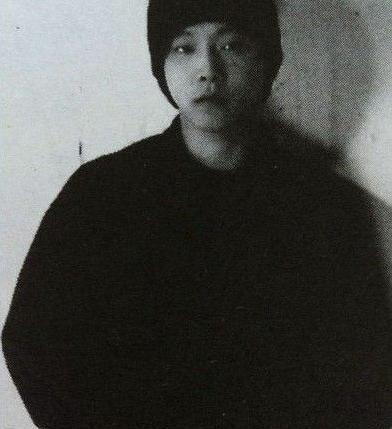

 可以说窦唯的音乐当年曾经达到了很高的高度，在做乐队主唱时应该说他的演唱很松弛，他所在的乐队也是当时最流行的摇滚乐队。而《无地自容》更是堪称经典中的经典。在当时也是窦唯和他的乐队第一次登上香港的舞台，吸引了众多人的目光。同时，人们更惊讶于内地还有这样一支摇滚乐队。正是这次活动，使窦唯和乐队成为在香港地区获得第一个摇滚乐队奖的内地乐队。他单飞以后的第一张专辑《黑梦》，与以往的音乐同样的精彩。可再后来的音乐就有了不食人间烟火的味道，也就越来越远离大众口味了（科尔沁夫） 无论在黑豹乐队中，还是在魔岩三杰中，他的音乐还是不错的。后来窦唯就更注重个人化的东西了，而且实验的成分更多了。后期窦唯不管专辑销量如何或别人是否欣赏，他只做自己的音乐，他的歌可以没有歌词，但他用音乐来填充、来表达自我的想法。如果说前期窦唯是音乐人的话，后期他就是艺术家，就像行为艺术一样，他是用声音作为艺术（崔述） 非学院派音乐视野中，尽管窦唯未必是其中最好的，但他至少已经展现出一个优秀音乐家应有的脉络，或者说通向自我音乐体系的方向；何况他惊人的创作量、长期勤奋和低调的音乐生活，也都使他逐渐脱离了旧梦，升入一个值得探讨的新世界。当然，我们考察的窦唯，已经不是那个摇滚愤青，或魔岩时代的才子，而是正在和不同音乐家合作、交流并尝试创造的音乐家。另一方面，他的声音往往混杂在集体当中（就像他和译乐队合作发表的专辑《幻听》），细寻其轨迹，想必对考察中国新音乐群体也会有所帮助（颜峻）